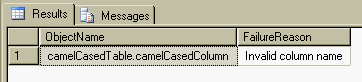
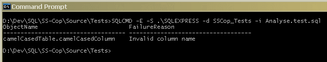

SS-Cop is a simple database schema analysis tool that casts its eye over your tables, procedures and functions to tell you if you've violated your project's naming conventions, missed a primary key, etc.
The inspiration comes from FxCop which is a free static code analysis tool from Microsoft for .Net. I've long been a fan of static code analysis tools although they are usually way outside the budget of the non-professional developer.
Most tools come with some sort of binaries, but because this is
SQL based it effectively comes as source code. It is intended that you apply
it to your baseline database schema and then run a script to invoke the analysis.
There is a batch file in the Source folder called Install.cmd
that you can use to load the SS-Cop objects into any database, e.g.
C:\SS-Cop\Source> Install .\SQLEXPRESS Northwind
NB: This batch file invokes SQLCMD to run the various .sql scripts and so
you need to have SQLCMD on your PATH.
Most likely you will already have your code in some form of Version Control System and also have some tool (or batch files) to create your baseline database. Because this library comes in source form you can just add it to your 3rd party area and then either use the supplied batch file or manually integrate it into your own build system.
The tool uses its own schema 'sscop' and so there should be no conflicts between the objects in SS-Cop and your production codebase.
SS-Cop is pretty simple to invoke, you just need to EXECUTE the
Analyse procedure with the set of rules that you wish to apply,
e.g.
exec sscop.Analyse @schemaName = 'dbo',
@tableNameRule = 'sscop.IsPascalCase',
@columnNameRule = 'sscop.IsCamelCase',
@procedureNameRule = 'sscop.IsPascalCase',
@functionNameRule = 'sscop.IsPascalCase',
@parameterNameRule = 'sscop.IsCamelCase';
Executing this in SQL Server Management Studio (SSMS) will apply the rules you've specified to the relevant objects and generate a result set with any violations in it, e.g.
Alternatively you can save the query into a SQL script file and run it in batch mode with SQLCMD:-
The first set of parameters to the Analyse procedure control which of the name based rules are executed. You need to supply a rule value if you want that check to take place or you can leave the rule defaulted (which is null) to skip it. These are the current set of name checks implemented:-
| Analyse Parameter | Description |
|---|---|
| @tableNameRule | Checks the name of each table in the specified schema |
| @columnNameRule | Checks the name of each column in every table in the specified schema |
| @procedureNameRule | Checks the name of each stored procedure in the specified schema |
| @functionNameRule | Checks the name of each user-defined function in the specified schema |
| @parameterNameRule | Checks the name of each parameter declared by the stored procedures and user-defined functions in the specified schema |
The naming based rules are just a User-Defined Function that accepts an
identifier as a sysname and returns a bit result. The
boolean result is 1 for valid and 0 for invalid. These are the current set of
built-in naming rules:-
| Rule Function | Description |
|---|---|
| IsPascalCase | Name must start with an upper case letter and only contain upper or lower case letters and digits, e.g. CustomerId |
| IsCamelCase | Name must start with a lower case letter and only contain upper or lower case letters and digits, e.g. customerId |
| IsLowerCase | Name must only contain lower case letters, digits and underscores to separate words, e.g. customer_id |
| IsUpperCase | Name must only contain upper case letters, digits and underscores to separate words, e.g. CUSTOMER_ID |
| HasSpaces | Helper function to check if the identifier has spaces in it |
| IsReservedKeyword | Helper function to check if the identifier is a SQL Server reserved keyword |
All these rules are in the sscop schema (as illustrated in the
original example). You can of course create your own custom function:-
create function myschema.HasChrisInTheNameAndNoSpaces
(
@identifier sysname
)
returns bit
as
begin
if (@identifier is null)
return null;
declare @hasSpaces bit = sscop.HasSpaces(@identifier);
if ( (@hasSpaces = 1) or (@identifier not like '%chris%') )
return 0;
return 1;
end
go
As you can see the rules are designed to be composed into more specific ones to match your exact naming conventions.
Not implemented yet...
Not implemented yet...
This library is freeware - you get what you pay for, nothing more, nothing less.
Please check the web site for updates.
Email: gort@cix.co.uk
Web: www.cix.co.uk/~gort
Chris Oldwood
8th December 2011